☰
每年進入11～12月，歐洲的街道就像施了魔法般，變成溫馨的童話小鎮。
聖誕市集可追溯至中世紀德國、奧地利，最初只是過冬前的擺攤活動，而現在歐洲聖誕市集，已經成為冬季代表性的景點之一！
廣場上華麗的聖誕樹、繽紛燈飾，市集熱紅酒的果香撲鼻而來，精緻的飾品、玩偶令人心動，可愛的薑餅、點心更是甜到心裡！
這場結合吃喝玩樂的歐洲冬季盛宴，每一幕都值得你親自收藏。
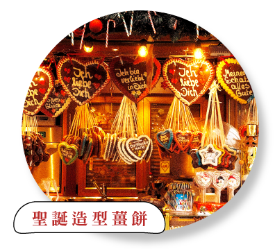
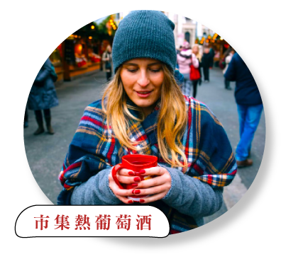
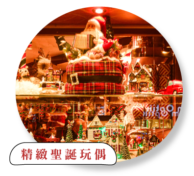
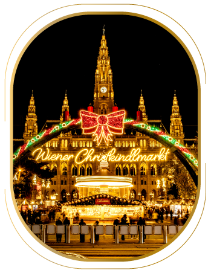
維也納聖誕市集五彩繽紛，市政廳廣場前尤為熱鬧，廣場入口每年都有不同的聖誕裝飾拱門；華麗的熊布朗宮，在聖誕市集的襯托下更顯金碧輝煌，來到維也納千萬不能錯過！
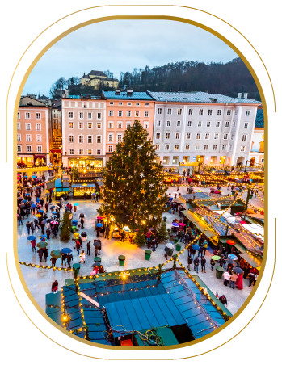
2025年作為莎姿堡聖誕市集51周年，主教座堂廣場、米拉貝爾花園小攤販林立，為莫札特之都點起了璀璨的燈光，廣場旁邊還有機會遇到街頭藝人表演，在浪漫音樂聲中感受聖誕的氛圍。
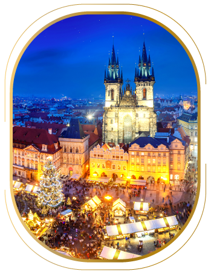
布拉格老成廣場及瓦次拉夫廣場，平時就是觀光客聚集地，在聖誕市集的烘托下更是熱鬧非凡，百年歷史的聖誕樹，華麗的燈飾、亮晶晶的彩球，是捷克最傳統的聖誕市集之一。
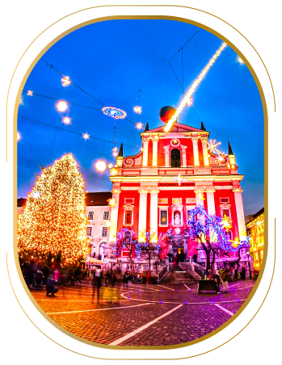
札格雷布連三年獲選歐洲最佳聖誕市集！華麗市集活動充滿音樂、美食，還有琳琅滿目的手工藝品～朱布亞那看三重橋、教堂的聖誕裝飾，溫馨氛圍讓人流連！亞得里亞海的明珠．杜布羅威尼克，展現獨一無二的冬季古城之美～
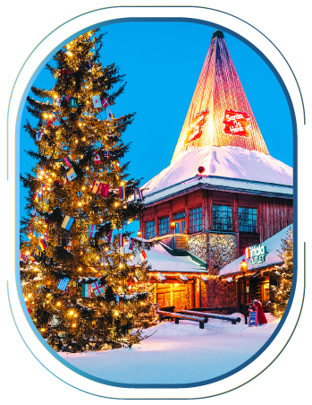
北極圈上的羅瓦涅米，據說就是聖誕老公公的故鄉！踏入這座童話聖誕老人村，搭乘馴鹿雪橇穿越森林，寫張明信片收集限定郵戳，還能和聖誕老人合影留念，讓你深度感受聖誕節的魔法！
想感受浪漫，就不能錯過史特拉斯堡的聖誕節！被譽為聖誕市集之都，獨特德法風情，從建築到市集都相當吸睛。漫步花都巴黎，走在香榭大道與巴黎鐵塔前，享受燈海與雪景交錯的法式假期。
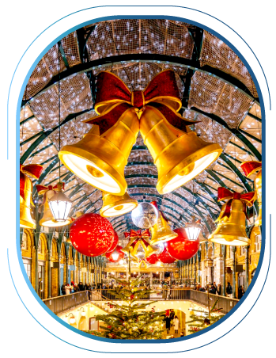
優雅倫敦在佳節期間多了一股童話魅力，復古街道建築掛滿耀眼燈飾，攝政街天使更是人人搶拍！旅人必逛的柯芬園，也精心點綴聖誕裝飾，讓人邊逛街、邊沉醉英倫冬日浪漫。
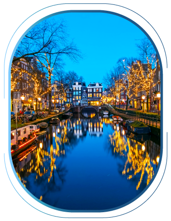
體驗荷蘭．阿姆斯特丹的聖誕傳統，看河畔閃爍的燈飾，感受運河間悠閒的氣氛，布魯塞爾必訪美麗大廣場，豐富木屋攤位充滿童話氣息～無論是小鎮、古城都處處充滿驚喜。
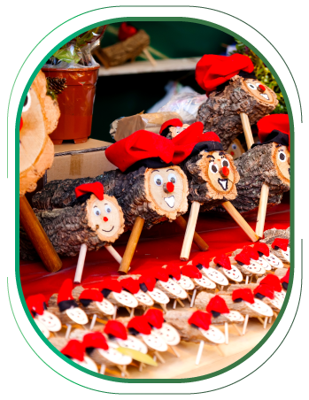
12月的巴塞隆納，到處可見繽紛的聖誕裝飾！除了體驗古老的市集、感受泰隆尼亞的熱情活力、品嘗道地的傳統美食，壯觀的聖家堂、奎爾公園等建築奇觀也是不可錯過的亮點。
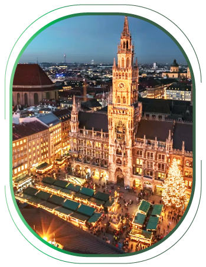
聖誕市集的起源地之一！德國擁有濃厚佳節氣息，無論是慕尼黑、紐倫堡都世界聞名的聖誕市集，帶你體驗古老傳統與現代風情交織的風光，走在大學城海德堡內，美麗的舊城雪景也同樣令人難忘。
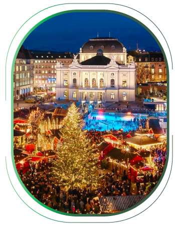
以阿爾卑斯山系著名的瑞士，每年冬季都迎來純淨雪景！陶醉蘇黎世火車站的室內聖誕市集、伯恩舊城的璀璨燈飾，打卡閃閃動人的巨型聖誕樹、品嚐暖心的熱巧克力，都是冬日瑞士的必備體驗。
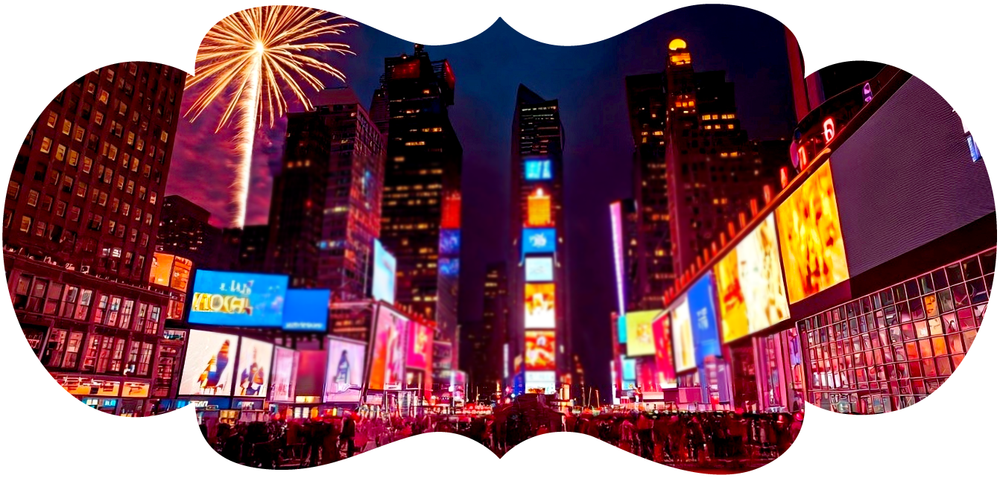
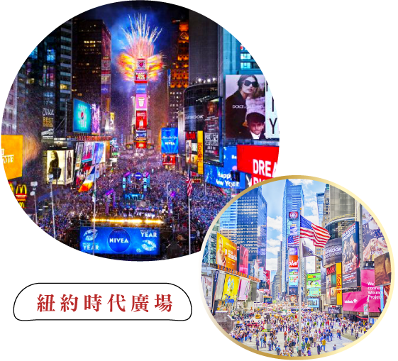
精選紐約跨年旅遊，帶你去時代廣場一起倒數，見證水晶球落下的瞬間！熱鬧跨年夜滿是閃耀的燈海、歡笑，精采的舞台活動更是震撼人心，讓紐約為你開啟2026夢想的新起點。